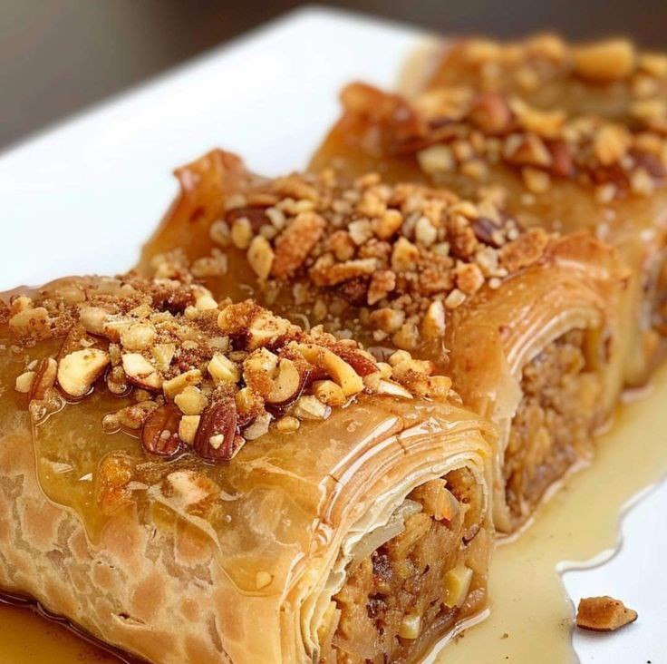

Fish & Chips - Plat Traditionnel Britannique
Ingrédients :
- 500 g de filets de cabillaud ou d’aiglefin
- 200 g de farine
- 1 cuillère à café de levure chimique
- 250 ml de bière blonde
- 1 œuf
- 500 g de pommes de terre
- Huile pour la friture
- Sel et poivre au goût
- Sauce tartare pour accompagner
Instructions :
- 1. Éplucher et couper les pommes de terre en frites, puis les rincer.
- 2. Chauffer l’huile et faire frire les frites jusqu'à ce qu'elles soient dorées.
- 3. Mélanger la farine, la levure, l'œuf et la bière pour obtenir une pâte lisse.
- 4. Assaisonner les filets de poisson avec du sel et du poivre.
- 5. Tremper les filets dans la pâte et les plonger dans l’huile chaude.
- 6. Frire jusqu’à ce que le poisson soit croustillant et bien doré.
- 7. Servir chaud avec les frites et une sauce tartare.